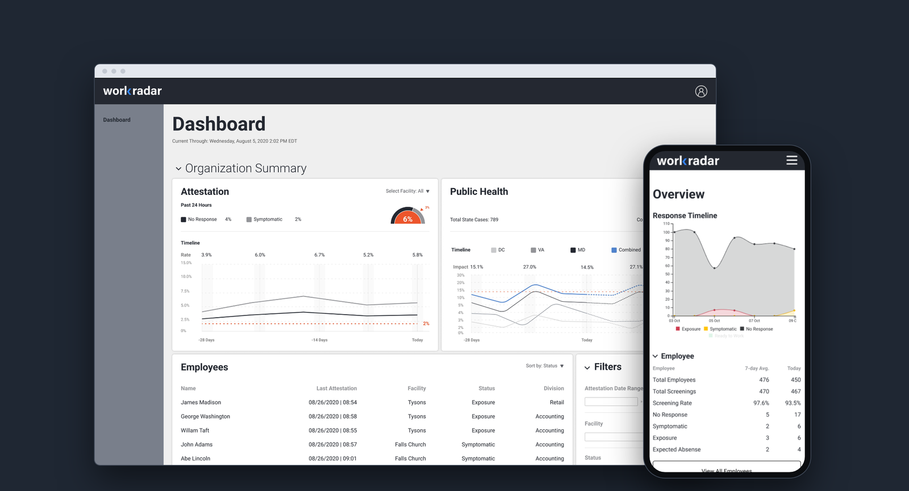
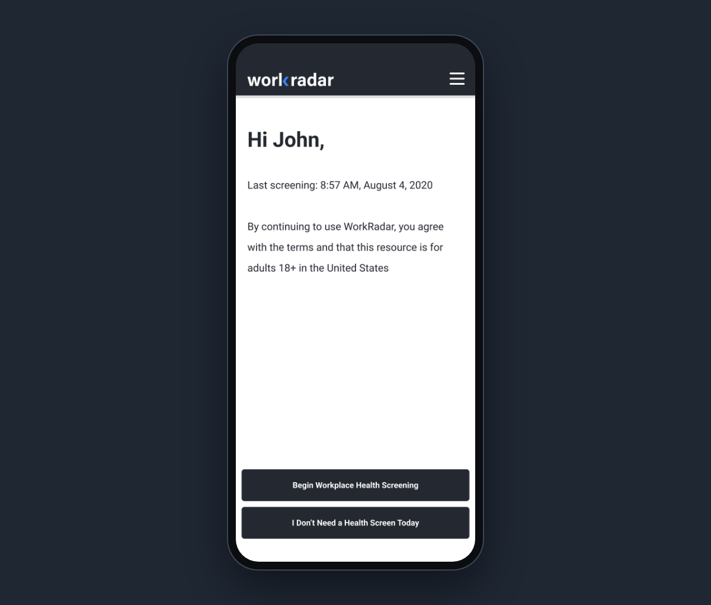
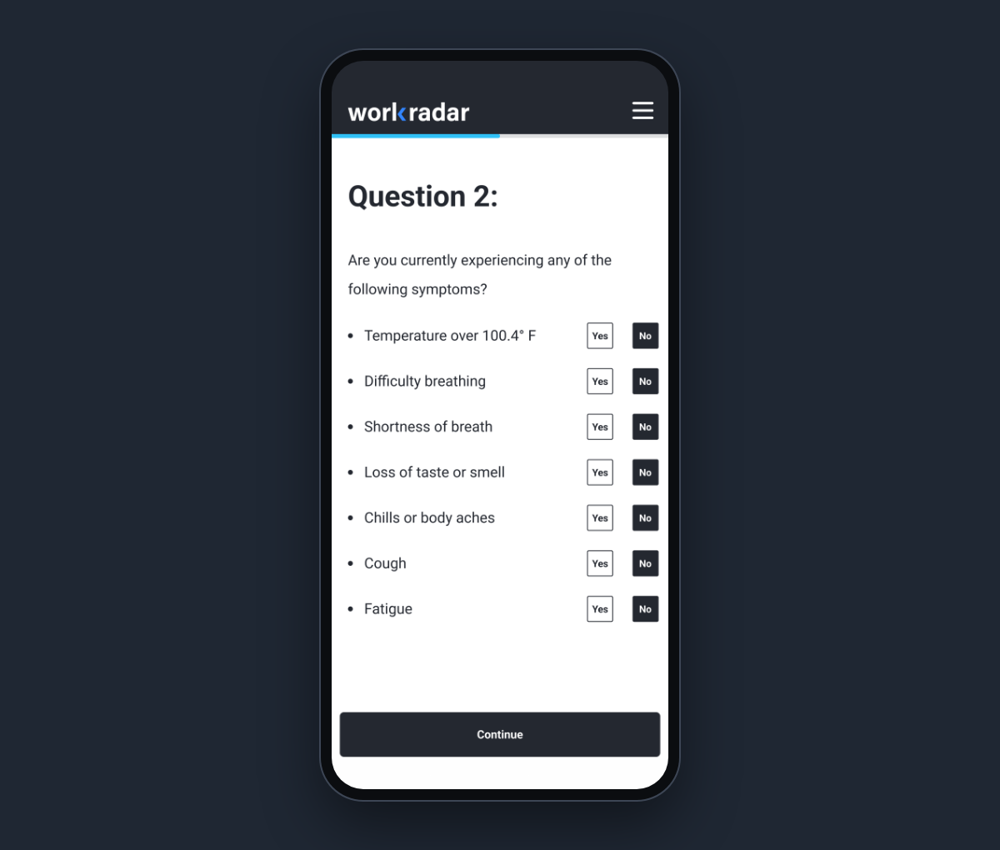
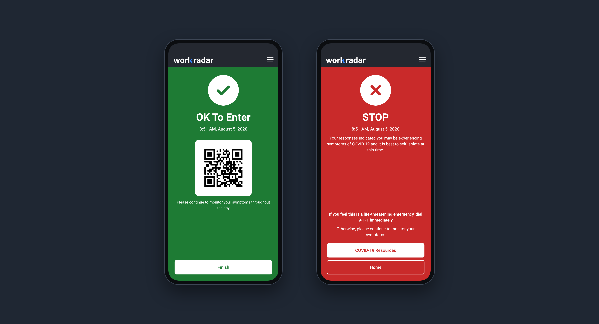
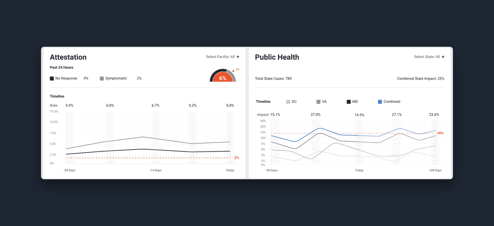
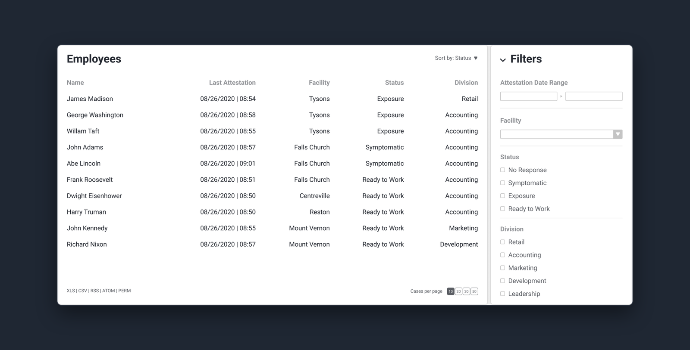
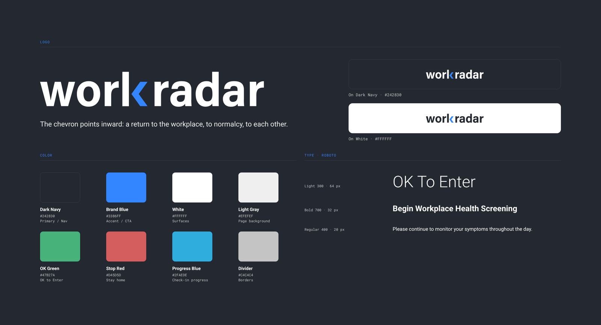

WorkRadar
WorkRadar helped employers decide when it was safe to bring people back to the office during COVID-19. Employees and guests answered a short daily health check-in; managers saw local public-health data and team check-ins on one dashboard. I designed it from concept through interactive prototype, including the brand, in 2020–2021. It reached evaluation with a regional bank, then was shelved as restrictions eased.
- Role
- Design Lead
- Company
- IdeaCrew
- Services
- Product designBrandMobileDashboard
- Years
- 2020–2021

Daily check-in
Every morning, employees answer two questions before coming in: have they been in close contact with someone with COVID-19 since their last screening, and do they have any of the listed symptoms. A summary lets them review and attest before submitting, and the result is unmistakable: OK to Enter, or Stop and stay home, with CDC resources and a self-isolation date worked out for them. Guests can screen without an account, and anyone not working that day can say so and pick a reason.



Management dashboard
Managers needed two pictures at once: what was happening in the community and what was happening on their own team. The dashboard pairs public-health trends with the organization's screening results, and lists every employee's latest status with filters by location.
Early on, the CEO wanted the employee list as cards. I pushed for a table instead, because managers needed to compare a large set of employees quickly, and a table makes that easy. Cards might have looked nicer, but this was a call to put UX above UI, and the table shipped in the final design.


A brand for an anxious moment
WorkRadar needed to feel calm and trustworthy at a time of real public anxiety. I created the name, logo, color palette and visual language from scratch, outside IdeaCrew's existing design system.
